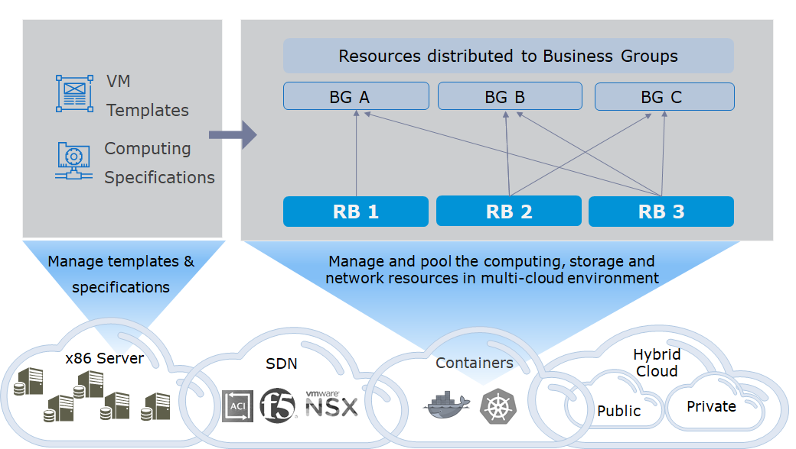

Infrastructure
With infrastructure, you can manage all the resources of a multi-cloud heterogeneous environment, including private clouds, public clouds, x86 bare metal servers, network virtualization (SDN), and storage virtualization (SDS). After connecting the cloud platform, you can distribute resources such as calculation, storage, and network through resource bundles to be assigned to different service groups. At the same time, you can create virtual machine templates and computing specifications (that is, instance types) in SmartCMP, and encapsulate and abstract virtual machine templates (or operating system images) and computing specifications (that is, instance types) of each cloud platform for unified management and automated calls.

1. Cloud platform
You can enter access information for each cloud platform in SmartCMP to connect and manage. For example, virtualization management controller address, username and password, or public cloud access key. The following table lists the information that needs to be entered for each cloud platform portal:
| Cloud Platform Type | Connect Method |
|---|---|
| vSphere | vCenter Server |
| OpenStack | OpenStack Management Controller |
| PowerVC | PowerVC Management Controller |
| Hyper-V | Microsoft System Center Virtual Machine Manager(SCVMM) Server |
| Physical Machine | SmartCMP physical server management node information |
| Aliyun | Aliyun Service Account AccessKey |
| AWS | AWS Service Account AccessKey |
| Microsoft Azure | Azure API Access Credentials |
| Tencent Cloud | Tencent Cloud Service Account AccessKey |
| QingCloud | QingCloud Service Account AccessKey |
| VMware NSX | NSX Management Controller |
| Cisco ACI | ACI Management Controller |
| F5 | F5 Management Controller |
2. Cloud Gateways
The enterprise's infrastructure and network environment are relatively complex. There are scenarios such as isolation between multiple data centers, virtual network environments, and hybrid cloud architecture. Based on this, SmartCMP uses a distributed architecture and connects to different network environments with the help of cloud gateways to monitor and manage the resources in each VPC, data center, or cloud environment. Users only need to create and manage a cloud gateway for each data center, VPC, or remote site for connection and communication.
3. Resource Bundle
In a resource bundle, you can specify a set of resource objects in the cloud platform as resource portals for deploying virtual machines or other cloud resources. The resource object can be a cluster of computers in a virtualization platform or an area of a public cloud.
Resources, such as computing, storage, and network, are classified and specified through resource bundles,and are distributed to different business groups for consumption and use by members in the business group. For example, you can assign different datastores and virtual switches in a vSphere cluster to different resource bundles, allowing different departments to deploy resources using different storage and networks. Or specify public-cloud-specific zones, availability zones, and VPC to enable the public cloud services deployed through the resource bundle to uniformly use the resources of the available area and isolate network from other services through VPC.
The following table lists the resource entrance configurations for each cloud platform resource bundle:
| Cloud Platform Type | Resource Bundle Entrance |
|---|---|
| vSphere | vSphere Cluster |
| OpenStack | OpenStack Availability Zone |
| PowerVC | PowerVC Availability Zone |
| Hyper-V | Hyper-V Cluster |
| Aliyun | Aliyun Zone, Availability Zone, and VPC |
| AWS | AWS Zone, Availability Zone, and VPC |
| Microsoft Azure | Azure Subscription ID, zone, and resource group |
| QingCloud | QingCloud Zone, Availability Zone, and VPC |
One or more resource bundles (including multiple resource bundles from the same cloud platform) can be associated with each business group. At the same time, each resource bundle can be assigned to one business group or shared to multiple or all service groups.
You can:
Specify the computing resources of the virtualization platform, or the area of the public cloud, the availability zone, etc.
Set the available resource quota, including the number of CPUs, the amount of memory, the number of virtual machines that can be deployed, etc.
Specify specific storage resources and network resources
Manually import the inventory resources in the cloud platform or set a timing policy to automatically synchronize the inventory resources in the cloud platform.
For example, you can create a vSphere resource bundle:
Specify a vSphere cluster in the managed vCenter to provide computing resources;
Set the resource quota of the resource bundle: the number of CPUs, the amount of memory, the number of virtual machines that can be deployed, the number of snapshots allowed, and so on;
Specify the data stores that can be used and set the storage space available for each data store;
Specify the virtual switch that can be used and set the IP address allocation method.
4. Virtual Machine Template
You can define one or more operating systems (such as CentOS) in SmartCMP. Operating system is a logical concept. Each operating system can be associated with templates or images from different cloud platforms (for example, a CentOS virtual machine template in vCenter, or a CentOS image in Aliyun). Operating system and virtual machine templates will be used when the service is configured.
5. Computing Specification
Computing specification defines the configuration specifications of the computer CPU and memory. On SmartCMP, like the operating system, computing specification is a logical concept, and you can associate specifications or instance types in different cloud platforms for each computing specification (such as specifications in the OpenStack platform, or instance types in the AWS public cloud). Wait). Computing specifications and cloud platform specifications will be used during service configuration.
Through the abstraction of the operating system and computing specifications, you can create different operating systems as needed to associate virtual machine templates that conform to enterprise security specifications. At the same time, create different computing specifications and specify specific instance types (such as reserved instance types that have been purchased). You can specify the operating system and virtual machine templates when the service is being configured and publish standardized services for users to apply.
6. IP Address Management
You can create and manage IP pools to automate the allocation of IP addresses when deploying cloud resources. IP pools can support multi-cloud heterogeneous environments, for example creating an IP pool and assigning it to vSphere and OpenStack platforms at the same time.
With IP address management, you can view the utilization of IP addresses, history logs, and manually occupy and release IP addresses.